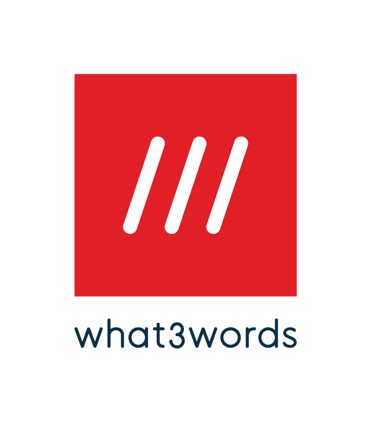
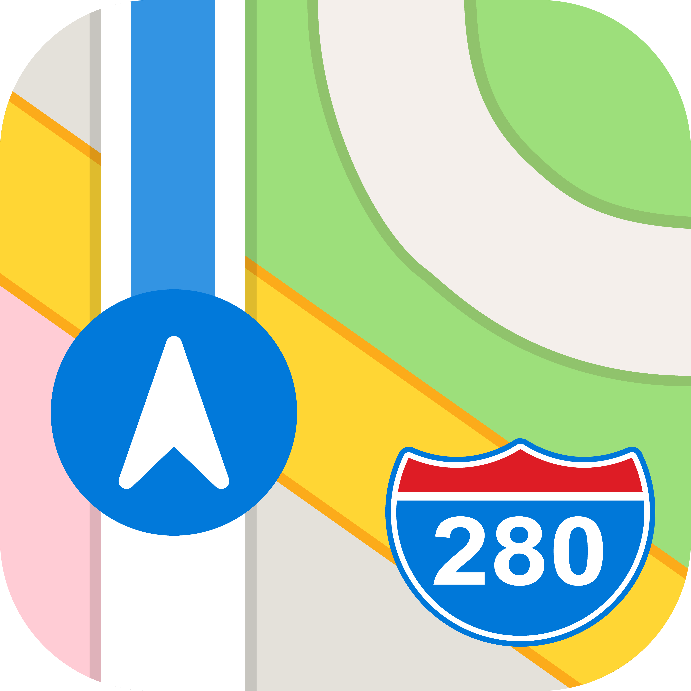
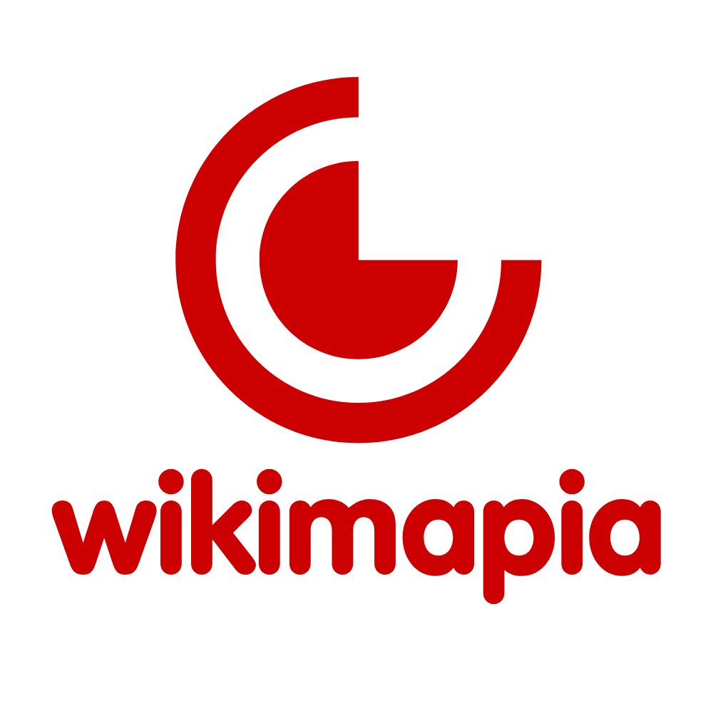
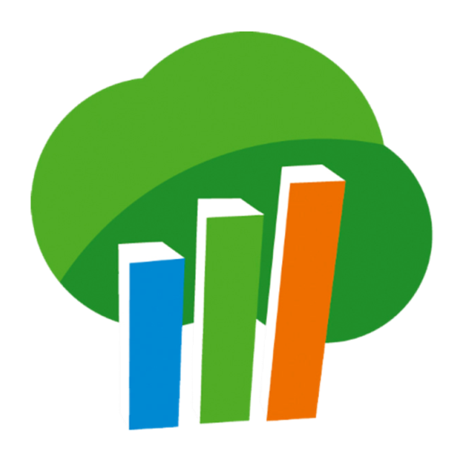
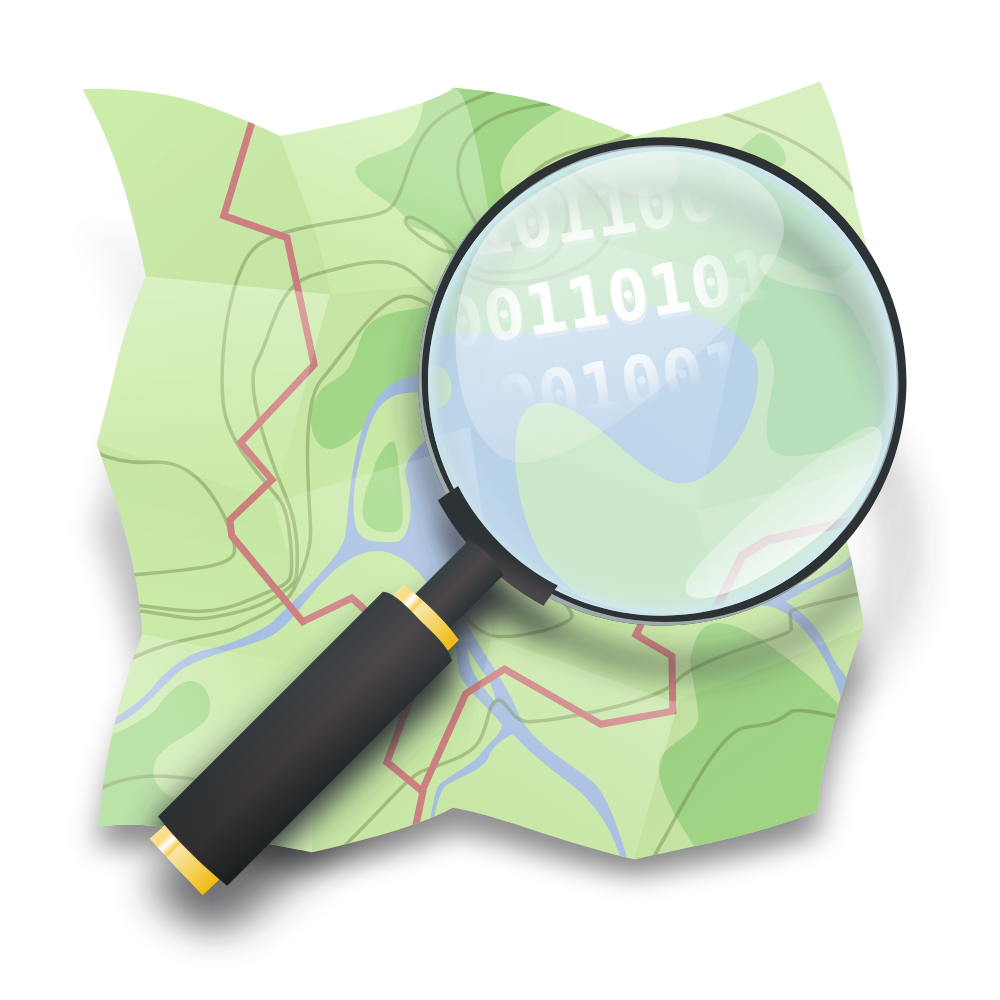

what3words
Innowacyjny system kodowania współrzędnych. Dzieli świat na kwadraty 3x3m i przypisuje im unikalny adres z trzech słów. Niezastąpiony w terenie bezadresowym.

Google Maps
Uniwersalna mapa komercyjna. Oferuje kluczową funkcję Street View do weryfikacji punktów charakterystycznych oraz precyzyjny podgląd natężenia ruchu.

Apple Maps (Web)
Przydatne do weryfikacji lokalizacji przesyłanych z urządzeń iOS. Czasami oferuje inne, bardziej aktualne zdjęcia satelitarne niż konkurencja.
Mapy.cz
Świetna darmowa mapa turystyczna i topograficzna. Posiada doskonale odwzorowane szlaki, ścieżki leśne oraz rzeźbę terenu. Pomocna w ratownictwie.

Wikimapia
Otwarte źródło mapowe współtworzone przez społeczność. Zawiera opisy obiektów, potoczne nazwy miejsc i terenów przemysłowych nieobecne na oficjalnych mapach.
Geoportal Krajowy
Oficjalny serwis rządowy. Kluczowy do sprawdzania numerów działek ewidencyjnych, dokładnych granic administracyjnych oraz bardzo szczegółowych ortofotomap.

Bank Danych o Lasach
Oficjalna mapa Lasów Państwowych. Umożliwia precyzyjną lokalizację na podstawie adresu leśnego lub numeru oddziału (odczytanego np. ze słupka w lesie).

OpenStreetMap (OSM)
Darmowa, otwarta mapa tworzona przez użytkowników. Często najszybciej nanosi nowe budynki, drogi osiedlowe, ścieżki piesze i nietypowe numery adresowe.